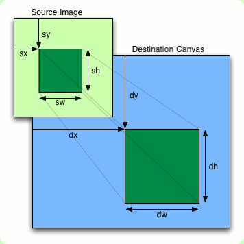
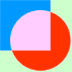

Canvas 2d Context Documentation by Jonathon Reesor
Last Edited: Tue, Sep 13, 2011
Description
Unofficial documentation on the standard 2d rendering API for the HTML5 canvas element.
Most all information on this page comes directly from W3C's working draft of the 2d context for the canvas element.
Calling getContext("2d") on an HTMLCanvasElement returns this interface(an object) for rendering shapes, text, images, and video.
Most of the context properties and methods defined by W3C are documented on this page, the absent sections dealing with focus management and caret selection.
Relevant Links
Table Of Contents
- Styling
- Line Styling
- Shadows
- Rectangles
- Paths
- Text
- Images
- Pixel Manipulation
- Context States
- Transformations
- Compositing
- The Drawing Model
1. Styling
- String, CanvasGradient, CanvasPattern context . fillStyle
- Possible values, any others are ignored.
- The current style used to fill shapes.
- Default value is "#000000".
- On retrieval, if context.fillStyle is:
- A color with an alpha value of 1, the hex representation of the color will be returned.
- Such as the color black will be returned as "#000000".
- A color with an alpha value less than 1, the CSS color string representation of the color will be returned.
- Such as the color transparent black will be returned as "rgba(0,0,0,0)".
- A CanvasGradient object, the CanvasGradient object will be returned.
- A CanvasPattern object, the CanvasPattern object will be returned.
- String, CanvasGradient, CanvasPattern context . strokeStyle
- Possible values, any others are ignored.
- The current style used to stroke shapes.
- Default value is "#000000".
- On retrieval, if context.strokeStyle is:
- A color with an alpha value of 1, the hex representation of the color will be returned.
- Such as the color black will be returned as "#000000".
- A color with an alpha value less than 1, the CSS color string representation of the color will be returned.
- Such as the color transparent black will be returned as "rgba(0,0,0,0)".
- A CanvasGradient object, the CanvasGradient object will be returned.
- A CanvasPattern object, the CanvasPattern object will be returned.
- CanvasGradient context . createLinearGradient(x1, y1, x2, y2)
- Parameters:
- Number x1 - The x value of the starting point.
- Number y1 - The y value of the starting point.
- Number x2 - The x value of the end point.
- Number y2 - The y value of the end point.
- Returns a CanvasGradient object holding a linear gradient between the two specified points.
- A NOT_SUPPORTED_ERR is thrown if any numbers are not finite.
- CanvasGradient context . createRadialGradient(x1, y1, r1, x2, y2, r2)
- Parameters:
- Number x1 - The x value of the starting circle.
- Number y1 - The y value of the starting circle.
- Number r1 - The radius of the starting circle.
- Number x2 - The x value of the end circle.
- Number y2 - The y value of the end circle.
- Number r2 - The radius of the end circle.
- Returns a CanvasGradient object holding a radial gradient that stretches between the two specified points.
- A NOT_SUPPORTED_ERR is thrown if any numbers are not finite.
- An INDEX_SIZE_ERR is thrown if either radii are negative.
- CanvasPattern context . createPattern(image, repetition)
- Parameters:
- HTMLImageElement, HTMLCanvasElement, HTMLVideoElement image - What image to use as the pattern.
- String repetition - How to repeat the pattern, accepts either "repeat", "repeat-x", "repeat-y", or "no-repeat".
- The pattern can be repeated in the x direction with a repetition attribute of "repeat-x", the y direction with a repetition argument of "repeat-y", in both dimensions with "repeat", or in neither with "no-repeat".
- If the repetition argument sent is not valid then a SYNTAX_ERR is thrown.
- Rendering of the pattern starts in the top left corner of the canvas, to move the pattern without repeating it a translation on the canvas should suffice.
- If image is neither an HTML image, canvas, or video, then a TYPE_MISMATCH_ERR is thrown.
- If image has no image data then an INVALID_STATE_ERR is thrown.
- If image is an image whose complete attribute is false then the method returns nothing and no error is thrown.
- If image is a video whose readyState attribute is either "HAVE_NOTHING" or "HAVE_METADATA" then the method returns nothing and no error is thrown.
- If image is a canvas element that has either a width or height of 0 then an INVALID_STATE_ERR is thrown.
- Object CanvasGradient
- CanvasGradient.addColorStop(offset, color)
- Parameters:
- Number offset - The offset of the color stop, between 0 and 1.
- String color - The color at that offset, must be a valid CSS color string.
- Used to add colored intervals to gradients, whether linear or radial.
- If offset is less than 0, greater than 1, Infinite, or NaN, then an INDEX_SIZE_ERR is thrown.
- If color is not a valid CSS color string then a SYNTAX_ERR is thrown.
- Returned by context.createLinearGradient() or context.createRadialGradient().
- Holds a linear or radial gradient for use as the context's fillStyle or strokeStyle.
- Object CanvasPattern
- Cannot be modified, has no public properties or methods.
- Returned by context.createPattern().
- Holds a pattern for use as the context's fillStyle or strokeStyle.
2. Line Styling
- Number context . lineWidth
- Can be set to any positive, finite, non-zero number.
- The width used when stroking shapes and paths.
- Default value is 1.0.
- String context . lineCap
- Possible values, any others are ignored.
- Specifies how lines draw onto the canvas will be closed visually.
- Values are case sensitive.
- Default value is "butt".
| context.lineCap = "butt" |
context.lineCap = "square" |
context.lineCap = "round" |
|
|
|
- String context . lineJoin
- Possible values, any others are ignored.
- Specifies how lines drawn onto the canvas will meet visually.
- Default value is "miter".
| context.lineJoin = "bevel" |
context.lineJoin = "round" |
context.lineJoin = "miter" |
|
|
|
- Number context . miterLimit
- Can be set to any positive, finite, non-zero number.
- When lineJoin is set to "miter", this value defines the maximum allowed ratio between the miter length to half the line width. If the length of the miter length exceeds the ratio then it will not be drawn.
- Default value is 10.
3. Shadows
- String context . shadowColor
- Can be set to any valid CSS color string, any other values are ignored.
- Defines what color the shadow drawn below stroked and filled shapes will be.
- Default value is "rgba(0, 0, 0, 0.0)", transparent black.
- Number context . shadowOffsetX
- Offsets the shadow on the x axis.
- Can be set to any finite number.
- Default value is 0.
- Is not affected by the Transformation Matrix
- Number context . shadowOffsetY
- Offsets the shadow on the y axis.
- Can be set to any finite number.
- Default value is 0.
- Is not affected by the Transformation Matrix
- Number context . shadowBlur
- Can be set to any positive finite number.
- Blurs shadows drawn below stroked or filled shapes.
- Default value is 0.
4. Rectangles
- context . fillRect(x, y, width, height)
- Parameters:
- Number x - The x value of the rectangles top-left corner.
- Number y - The y value of the rectangles top-left corner.
- Number width - The width of the rectangle, must be greater than zero.
- Number height - The height of the rectangle, must be greater than zero.
- Fills the specified rectangle with the current fillStyle.
- Does not affect the current path.
- Affected by:
- context . strokeRect(x, y, width, height)
- Parameters:
- Number x - The x value of the rectangles top-left corner.
- Number y - The y value of the rectangles top-left corner.
- Number width - The width of the rectangle.
- Number height - The height of the rectangle.
- Strokes the specified rectangle with the current strokeStyle.
- Either width or height may be zero, if so a straight line will be drawn along the non-zero dimension.
- Does not affect the current path.
- Affected by:
- context . clearRect(x, y, width, height)
- Parameters:
- Number x - The x value of the rectangles top-left corner.
- Number y - The y value of the rectangles top-left corner.
- Number width - The width of the rectangle, must be greater than zero.
- Number height - The height of the rectangle, must be greater than zero.
- Sets pixels in the specified rectangle to a fully transparent black, "rgba(0, 0, 0, 0.0)".
- Does not affect the current path.
- Affected by:
5. Paths
The 2d context for canvas is designed to make heavy use of paths, complex shapes made up of any number of straight lines and arcs.
Within a correct canvas implementation, the canvas always contains a list of sub-paths that make up the current path.
The path's current point is the ending point of the last segment.
- context . beginPath()
- Empties the list of subpaths, resetting the current path.
- context . moveTo(x, y)
- Parameters:
- Number x - The x value to move to.
- Number y - The y value to move to.
- Sets a new specified starting point that the next subpath will start at.
- Affected by:
- context . lineTo(x, y)
- Parameters:
- Number x - The x value to end the line at.
- Number y - The y value to end the line at.
- Adds a line to the current path that begins at the current point and ends at the specified point.
- Affected by:
- context . arcTo(x1, y1, x2, y2, radius)
- Parameters:
- Number x1 - The x value of the curve's beginning point.
- Number y1 - The y value of the curve's beginning point.
- Number x2 - The x value of the curve's ending point.
- Number y2 - The y value of the curve's ending point.
- Number radius - The radius of the arc.
- Adds an arc to the current path defined by the beginning and ending point, and the radius.
- The current point and the first point sent will be joined by a line if they are not equal.
- Affected by:
- Negative values for the radius raise an INDEX_SIZE_ERR.
- context . arc(x, y, radius, startAngle, endAngle, anticlockwise)
- Parameters:
- Number x - The x value of the arcs center.
- Number y - The y value of the arcs center.
- Number radius - The radius of the arc.
- Number startAngle - The angle that the arc begins at, must be sent in radians.
- Number endAngle - The angle that the arc ends at, must be sent in radians.
- boolean anticlockwise - If true then the arc will be drawn in a counter-clockwise manner.
- Adds an arc to the current path defined by its center, radius, starting angle, and ending angle.
- The current point and the point located at the specified starting angle will be joined by a line if they are not equal.
- Affected by:
- Negative values for the radius raise an INDEX_SIZE_ERR.
- context . quadraticCurveTo(cpx, cpy, x, y)
- Parameters:
- Number cpx - The x value of the curve's control point.
- Number cpy - The y value of the curve's control point.
- Number x - The x value to end the curve at.
- Number y - The y value to end the curve at.
- Adds a quadratic curve to the current path defined by the specified control point and the end point.
- Affected by:
- context . bezierCurveTo(cp1x, cp1y, cp2x, cp2y, x, y)
- Parameters:
- Number cp1x - The x value of the curve's first control point.
- Number cp1y - The y value of the curve's first control point.
- Number cp2x - The x value of the curve's second control point.
- Number cp2y - The y value of the curve's second control point.
- Number x - The x value to end the curve at.
- Number y - The y value to end the curve at.
- Adds a bezier curve to the current path defined by the two specified control points and the end point.
- Affected by:
- context . rect(x, y, w, h)
- Parameters:
- Number x - The x value of the rectangles top-left corner.
- Number y - The y value of the rectangles top-left corner.
- Number w - The width of the rectangle.
- Number h - The height of the rectangle.
- Adds a rectangle to the path in the form of a subpath with four points corresponding to the four sides of the rectangle, a new subpath is then added starting at (x,y).
- Affected by:
- context . fill()
- Fills the current path with the current fillStyle, closing it if it is not already closed.
- Affected by:
- context . stroke()
- Srokes the current path with the current strokeStyle, closing it if it is not already closed.
- Affected by:
- context . clip()
- Sets the current path as the clipping region where it intersects with the current one.
- Rendering done to the canvas is subject to the clipping region and will only be performed where the shape/image to be rendered intersects with it.
- By default the clipping region is a rectangle that stretches the breadth of the canvas.
- Affected by:
- boolean context . isPointInPath(x, y)
- Parameters:
- Number x - The x value of the point to check.
- Number y - The y value of the point to check.
- Returns true if the specified point is within the shape composed by the current path, false otherwise.
- Returns false if any argument is Infinite or NaN.
- Points that lie on the path are considered to be within the path.
- W3C specifies that the Non-Zero Winding Number Rule should be used to test if the point is within the shape.
6. Text
The text rendering abilites of the 2d context involve the font property, two methods that each fill and stroke text, two properties that modify positioning the text, and a method to measure the width of the specified text.
Within the Bespin text editor from Mozilla, measuring the height of the text is accomplished by measuring the width of a lowercase "m".
Measuring text can be an intensive operation, sometimes taking as long as rendering text, try to avoid over-using it.
- String context . font
- Can be set to any valid CSS font string.
- Specifies the font( and font size) to use when rendering text.
- Default value is "10px sans-serif".
- String context . textAlign
- Possible values, any others are ignored.
- "start" - The start of the text, which depends on the directionality of the canvas.
- "end" - The end of the text, which depends on the directionality of the canvas.
- "left" - The left side of the text.
- "right" - The right side of the text.
- "center" - The center of the text.
- Default value is "start".
- The possible values of textAlign change the horizontal position of the anchor used when drawing text.
- In the images below the method fillText(centerX,centerY,"Some Text") was called across different textAlign values, the red dot indicates the anchor used to position the text.
- Note that in these images the text directionality is ltr, if changed to rtl then the "start" and "end" values will produce the opposite effect.
| context.textAlign = "start" |
context.textAlign = "end" |
context.textAlign = "left" |
context.textAlign = "right" |
context.textAlign = "center" |
 |
 |
|
 |
|
- String context . baseLine
- Possible values, any others are ignored.
- "top" - The top of the em square.
- "hanging" - The hanging baseline.
- "middle" - The middle of the em square.
- "alphabetic" - The alphabetic baseline.
- "ideographic" - The ideographic baseline.
- "bottom" - The bottom of the em square.
- Default value is "alphabetic".
- The possible textBaseline values change the vertical position of the anchor used when drawing text.
- In the images below the method fillText(centerX,centerY,"Some Text") was called across different textBaseline values, the red dot indicates the anchor used to position the text.
- Note that the "hanging" option is positioned incorrectly, these images were extracted from a canvas element in Firefox when the hanging baseline was not yet implemented and was treated as "alphabetic".
| context.textBaseline = "top" |
context.textBaseline = "hanging" |
context.textBaseline = "middle" |
context.textBaseline = "alphabetic" |
context.textBaseline = "ideographic" |
context.textBaseline = "bottom" |
|
 |
|
|
 |
|
- context . fillText(text, x, y[, maxWidth])
- Parameters:
- String text - The text to draw onto canvas.
- Number x - The x position to draw the text's anchor point at.
- Number y - The y position to draw the text's anchor point at.
- Number maxWidth - Optional, the maximum width of the rendered text.
- Draws specified text filled with the current fillStyle at the specified location.
- If specified then the width of the text will not exceed that of the maxWidth argument.
- Does not affect the current path.
- Affected by:
- context . strokeText(text, x, y[, maxWidth])
- Parameters:
- String text - The text to draw onto canvas.
- Number x - The x position to draw the text's anchor point at.
- Number y - The y position to draw the text's anchor point at.
- Number maxWidth - Optional, the maximum width of the rendered text.
- Draws the specified text stroked with the current strokeStyle at the specified location.
- If specified then the width of the text will not exceed that of the maxWidth argument.
- Does not affect the current path.
- Affected by:
- TextMetrics context . measureText(text)
- Parameters:
- String text - The text to measure.
- Measures the width of the specified text.
- The width of the text is given by the width of the affected region if the text was to be rendered onto the canvas using the current font.
- Returns a TextMetrics object.
- Affected by:
- Object TextMetrics
- Number TextMetrics.width
- The width of the measured text.
- Returned by context.measureText().
- Holds the width of a string of text if rendered onto the canvas.
- Unfortunately there is no easy way to measure the height of any rendered text, though there are some workarounds.
- Render text with a font size in pixels, so that the height of the text should be known from the font size.
- Measure the width of the lowercase "m" character, this seems to be an accurate measurement with certain fonts.
- Keep a list/database of the heights of commonly used fonts.
- Draw some text onto an empty canvas and check what pixels were affected(changed color) from rendering the text.
7. Images
- context . drawImage(image, dx, dy[, dw, dh])
- Parameters:
- HTMLImageElement, HTMLCanvasElement, HTMLVideoElement image - What to draw onto the canvas, whether its an image, canvas, or a video.
- Number dx - Destination x, the x value at which to draw the image.
- Number dy - Destination y, the y value at which to draw the image.
- Number dw - Destination w, optional, the width at which to draw the image.
- Number dh - Destination h, optional, the height at which to draw the image.
- Draws the specified image to the canvas, scaling the image if needed.
- context . drawImage(image, sx, sy, sw, sh, dx, dy, dw, dh)
- Parameters:
- HTMLImageElement, HTMLCanvasElement, HTMLVideoElement image - What to draw onto the canvas, whether its an image, canvas, or a video.
- Number sx - Source x, the x location of the source rectangle in the image.
- Number sy - Source y, the y location of the source rectangle in the image.
- Number sw - Source w, the width of the source rectangle in the image.
- Number sh - Source h, the height of the source rectangle in the image.
- Number dx - Destination x, the x location of the destination rectangle.
- Number dy - Destination y, the y location of the destination rectangle.
- Number dw - Destination w, the width of the destination rectangle.
- Number dh - Destination h, the height of the destination rectangle.
- Draws a rectangular section of the specified image to the specified region on the canvas, scaling the image if needed.
- It is up to the browser to determine what algorithm will be used to scale the image.
- Note that it is possible to draw a canvas onto iself, the image on the canvas is copied before being rendered back onto the canvas.
- If the numeric arguments do not make sense then an INDEX_SIZE_ERR is thrown and nothing is drawn.
- If image is neither an HTML image, canvas, or video, then a TYPE_MISMATCH_ERR is thrown and nothing is drawn.
- If image has no image data then an INVALID_STATE_ERR is thrown and nothing is drawn.
- If image is an image whose complete attribute is false then the method returns without drawing anything or throwing an error.
- If image is a video whose readyState attribute is either "HAVE_NOTHING" or "HAVE_METADATA" then the method returns without drawing anything or throwing an error.
- If image is a canvas element that has either a width or height of 0 then the method throws an INVALID_STATE_ERR and nothing is drawn.
- Affected by:

8. Pixel Manipulation
- ImageData context . createImageData(w, h)
- Parameters:
- Number w - The width of the image data to return.
- Number h - The height of the image data to return.
- Returns a blank ImageData object with the specified width and height.
- ImageData context . createImageData(imageData)
- Parameters:
- Returns a blank ImageData object with the same width and height as the sent ImageData object.
- Used to create new ImageData objects.
- New ImageData objects will be filled with transparent black.
- A TYPE_MISMATCH_ERR is thrown if arguments are null.
- A NOT_SUPPORTED_ERR is thrown if an argument is either Infinity or NaN.
- ImageData context . getImageData(sx, sy, sw, sh)
- Parameters:
- Number sx - The x location of the rectangle to get the image data from.
- Number sy - The y location of the rectangle to get the image data from.
- Number sw - The width of the rectangle to get the image data from.
- Number sh - The height of the rectangle to get the image data from.
- Returns an ImageData object holding pixel data from the specified rectangle.
- A NOT_SUPPORTED_ERR is thrown if an argument is either Infinity or NaN.
- context . putImageData(imageData, dx, dy[, dirtyX, dirtyH, dirtyW, dirtyH])
- Parameters:
- ImageData imageData - The image data to place onto canvas.
- Number dx - The x location to place the image data.
- Number dy - The y location to place the image data.
- Number dirtyX - Optional, the x location of the clipping rectangle to use.
- Number dirtyY - Optional, the y location of the clipping rectangle to use.
- Number dirtyW - Optional, the width of the clipping rectangle to use.
- Number dirtyH - Optional, the height of the clipping rectangle to use.
- Places the sent image data onto the canvas without any styling or compositing effects.
- Pixels from the sent image data will only be placed onto the canvas if they also intersect with the dirty rectangle if it is provided.
- If the first argument is not an ImageData object then a TYPE_MISMATCH_ERR is thrown.
- A NOT_SUPPORTED_ERR is thrown if an argument is either Infinity or NaN.
- Object ImageData
- Number width
- Number height
- CanvasPixelArray data
- A one dimensional array holding numbers for the red, green, blue, and alpha component of every pixel.
- The length of the array being the number of pixels in the image multiplied by 4 for the four color components of each pixel.
- An object that represents a bitmap image.
- Returned by context.createImageData() or context.getImageData().
- Taken as an argument by context.putImageData().
9. Context States
The browser keeps a stack of context "states", each of which is an instance(snapshot) of the context's properties.
The management of these states is done with two commands, one to push the current state onto the stack, and another to restore the most recent state to the context.
The correct application of these states can be invaluable when doing complex drawing onto a canvas.
- context . save()
- Pushes(adds) the current context state onto the stack.
- The current path is not included in the context state, it is reset only with the beginPath() method.
- The context state consists of the following properties/values:
- context . restore()
- Pops(removes) the most recently saved state from the stack and applies it to the context.
10. Transformations
- context . scale(x, y)
- Parameters:
- Number x - The scale factor in the horizontal direction.
- Number y - The scale factor in the vertical direction.
- Scales the transformation matrix by the specified amount.
- Such that a factor of 1 will not change the scale on that dimension, whereas a factor of 2 will double the scale.
- context . rotate(angle)
- Parameters:
- Number angle - The angle in radians to rotate the transformation matrix by.
- Rotates the transformation matrix clockwise by the specified amount.
- context . translate(x, y)
- Parameters:
- Number x - The amount by which to horizontally translate the transformation matrix.
- Number y - The amount by which to vertically translate the transformation matrix.
- Translates the transformation matrix by the specified values.
- context . transform(m11, m12, m21, m22, dx, dy)
- Parameters:
- Number m11 - The entry at (1,1) of the multiplier matrix.
- Number m12 - The entry at (1,2) of the multiplier matrix.
- Number m21 - The entry at (2,1) of the multiplier matrix.
- Number m12 - The entry at (2,2) of the multiplier matrix.
- Number dx - The entry at (3,1) of the multiplier matrix.
- Number dy - The entry at (3,2) of the multiplier matrix.
- Multiplies the current transformation matrix by the matrix below, composed of the specified values.
| m11 |
m21 |
dx |
| m12 |
m22 |
dy |
| 0 |
0 |
1 |
- context . setTransform(m11, m12, m21, m22, dx, dy)
- Parameters:
- Number m11 - The entry at (1,1) of the multiplier matrix.
- Number m12 - The entry at (1,2) of the multiplier matrix.
- Number m21 - The entry at (2,1) of the multiplier matrix.
- Number m12 - The entry at (2,2) of the multiplier matrix.
- Number dx - The entry at (3,1) of the multiplier matrix.
- Number dy - The entry at (3,2) of the multiplier matrix.
- This method resets the transformation matrix and then calls context.transform() with the specified arguments.
11. Composition
- Number context . globalAlpha
- Accepts any number between 0 and 1.
- On most renderings this number is applied to the pre-existing alpha component.
- With a globalAlpha of 0 the color/image will be completely transparent, as if no drawing had been done.
- With a globalAlpha of 1 the alpha component of that color/image will remain opaque.
- Default value is 1.
- String context . globalCompositeOperation
- Possible values, any others are ignored.
- "source-over" - The source is rendered above the destination.
- "source-in" - The source is rendered where it intersects with the destination. Destination is discarded.
- "source-out" - The source is rendered where it does not intersect with the destination. Destination is discarded.
- "source-atop" - The source is rendered where it intersects with the destination.
- "destination-over" - The destination is rendered above the source.
- "destination-in" - The destination is rendered where it intersects with the source. Source is discarded.
- "destination-out" - The destination is rendered where it does not intersect with the source. Source is discarded.
- "destination-atop" - The destination is rendered where it intersects with the source.
- "lighter" - Renders a sum of the source and destination images, with color values approaching 255 as a limit.
- "copy" - Only the source is rendered, the destination is discarded, this will eliminate shadow effects.
- "xor" - Exclusive OR of the images, pixels are discarded where they intersect with the source and destination.
- Specifies how new image data(the source) should be rendered onto the canvas in relation to the current image data(the destination).
- In operations that deal with shapes and vector images, the image is first rendered onto a temporary bitmap and then treated as the source.
- Default value is "source-over".
| "source-over" |
"source-in" |
"source-out" |
"source-atop" |
"destination-over" |
"destination-in" |
"destination-out" |
"destination-atop" |
"lighter" |
"copy" |
"xor" |
|
|
|
|
|
|
|
|
 |
|
|
12. The Drawing Model
This model applies to all methods that render shapes or images to the canvas aside from the putImageData() method.
- Render the shape/image onto a temporary bitmap using the current styling and transformation matrix.
- If a shadow is to be drawn, render the shadow for the shape/image onto another temporary bitmap.
- If a shadow is to be drawn, multiply the alpha component of every pixel in the shadow by the globalAlpha.
- If a shadow is to be drawn, composite the shadow onto the canvas within the clipping region using the current composition method.
- Multiple the alpha component of every pixel in the shape/image by the globalAlpha.
- Composite the shape/image onto the canvas within the clipping region using the current composition method.
Disclaimer
All images from this page have been taken from either W3C's Canvas 2d Context Specification(http://dev.w3.org/html5/2dcontext/) or Nihilogic(http://blog.nihilogic.dk/) and added onto this page with a bit of editing.
No copyright infringement intended, all images are owned by their respective owners.
{kind=link}